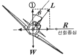
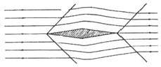
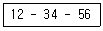
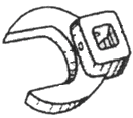
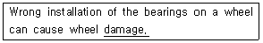
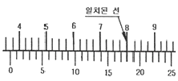
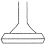
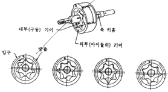
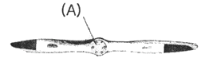

항공기관정비기능사 (2012-10-20 기출문제)
1과목: 비행원리
1. 비행중인 비행기의 항력이 추력보다 크게 되면 나타나는 현상은?
- 가속 전진한다.
- 상승비행을 한다.
- 등속으로 비행한다.
- 감속 전진비행을 한다.
(정답률: 85%)

2. 도살핀(Dorsal pin)의 효과 또는 목적에 대한 설명으로 옳은 것은?
- 아음속 영역에서 비행시 비행기의 조종성을 향상시키는데 주 목적이 있다.
- 수직 고리날개가 실속하는 큰 옆미끄럼각에서도 방향안정을 유지하는 효과를 얻게 한다.
- 주 날개가 실속 상태인 경우, 세로 안정을 유지하는데 목적이 있다.
- 고속으로 비행시 강력한 공기 저항을 극복하여 조종성을 증가시키는데 주 목적이 있다.
(정답률: 88%)
3. 비행기가 그림과 같이 정상선회 비행을 할 때 ①의 방향으로 작용하는 힘의 크기를 옳게 표시한 것은? (단, 비행기 무게 W, 속도 V, 선회반지름 R, 양력 L 이다.)

- W
- Lsinβ
- Lcosβ
- WV2/gR
(정답률: 67%)
4. 비행기의 승강키(elevator)에 대한 설명으로 옳은 것은?
- 수직축(Vertical axis)을 중심으로 한 비행기의 운동(Yawing), 즉 좌우 방향전환에 사용하는 것이 주 목적이다.
- 비행기의 가로축(Lateral axis)을 중심으로 운동(Pitching)을 조종하는데 주로 사용되는 조종면이다.
- 비행기의 세로축(Longitudinal axis)을 중심으로 운동(Rolling)을 조종하는데 주로 사용되는 조종면이다.
- 이륙이나 착륙시 비행기의 양력을 증가시켜 주는데 목적이 있다.
(정답률: 79%)
5. 실제유체와 이상유체를 구분하는 주된 요소는?
- 운동에너지
- 점성
- 유체의 압력
- 유체의 속도
(정답률: 81%)
6. 비행기 날개의 가로세로비를 옳게 나타낸 식은? (단, 날개의 길이 b, 날개시위 c, 날개의 면적 S 이다.)
- b/S
- c2/S
- b2/S
- S/c
(정답률: 81%)
7. 비행하는 물체가 음속보다 빠르게 공기를 통과할 때 발생하는 것으로 그림과 같이 공기의 특성이 급격히 변하는 층을 무엇이라고 하는가?

- 충격파
- 박리
- 유도항력
- 와류
(정답률: 84%)
8. 다음 중 동일한 높이의 고도에서 대기 밀도에 대한 설명으로 가장 옳은 것은?
- 대기압과 온도가 낮을수록 커진다.
- 대기압과 온도가 높을수록 커진다.
- 대기압이 낮을수록, 온도가 높을수록 커진다.
- 대기압이 높을수록, 온도가 낮을수록 커진다.
(정답률: 59%)
9. 헬리콥터의 회전날개가 상,하로 운동하며 양력의 비대칭 현상을 없애주고, 전진 비행을 가능하게 하는 것을 무엇이라 하는가?
- 플래핑 운동
- 지면효과
- 페더링 운동
- 리드-랙 운동
(정답률: 81%)
10. 정지비행 상태에 있는 헬리콥터의 수직방향으로 작용하는 힘에 대한 설명으로 옳은 것은?
- 주회전 날개 추력의 수평성분이 헬리콥터의 무게와 같다.
- 주회전 날개 추력의 수직성분이 헬리콥터의 무게와 같다.
- 주회전 날개 추력의 수직성분이 꼬리 회전 날개의 추력과 같다.
- 주회전 날개 추력과 꼬리회전 날개의 추력의 합이 회전익 항공기 무게와 같다.
(정답률: 61%)
11. 뒤젖힘 날개에서 나타나는 날개 끝 실속을 방지하는 방법으로 틀린 것은?
- 날개 앞전 부분에 와류발생장치를 설치한다.
- 날개 끝 부분으로 갈수록 받음각이 작아지도록 날개 앞전을 비틀어준다.
- 날개 중간에 실속막이(Stall fence)를 부착하여 날개 끝쪽으로의 흐름을 방지한다.
- 뿌리쪽 날개골의 최대양력계수보다 끝쪽 날개골의 최대양력계수가 작은 날개골을 선택한다.
(정답률: 61%)
12. 정적 안정과 동적 안정에 대한 설명으로 옳은 것은?
- 동적안정이 양(+)이면 정적안정은 반드시 양(+)이다.
- 정적안정이 음(-)이면 동적안정은 반드시 양(+)이다.
- 정적안정이 양(+)이면 동적안정은 반드시 양(+)이다.
- 동적안정이 음(-)이면 정적안정은 반드시 음(-)이다.
(정답률: 74%)
13. 날개골(airfoil)의 모양을 결정하는 요소가 아닌 것은?
- 두께
- 캠버
- 받음각
- 시위선
(정답률: 79%)
14. 600m 상공에서 글라이더가 수평활공거리 6000m 만큼 활공하였다면, 이때 양항비는?
- 0.06
- 5
- 8
- 10
(정답률: 92%)
15. 공기를 강체(Rigid body)라 가정하고 프로펠러 깃이 1회전할 때 프로펠러가 진행하는 거리를 무엇이라 하는가?
- 유효 피치(Effective pitch)
- 산술적 피치(Arithmetic pitch)
- 기하학적 피치(Geometric pitch)
- 평균 공력 피치(Mean aerodynamic pitch)
(정답률: 68%)
16. 항공기에서 사용되며 그 자체는 가연성 물질이 아니지만 다른 인화성 물질의 연소를 촉진하므로 특히 주의해야 하는 무색 무취의 고압가스는?
- 염소
- 산소
- 수소
- 페놀
(정답률: 76%)
17. 접시머리리벳작업에 필요치 않는 작업은?
- 탭 작업
- 리머 작업
- 카운터 싱크 작업
- 딤플 작업
(정답률: 66%)
18. 다음과 같은 항공정비도서의 번호에서 56의 자리가 의미하는 것은?

- Page
- System
- Sub-system
- Subject
(정답률: 55%)
19. 항공기가 강풍에 의해 파손되는 것을 방지하기위해 항공기를 고정시키는 것을 무엇이라 하는가?
- MOORING
- JACKING
- SERVICING
- PARKING
(정답률: 76%)
20. 모든 부품들이 장탈되거나 분해된 후 세척하지 않은 상태에서 가장 먼저 하는 검사는?
- 육안검사
- 파괴검사
- 분해검사
- 치수검사
(정답률: 90%)
2과목: 항공기정비
21. 오픈엔드렌치로 작업할 수 없는 좁은 장소의 작업에 사용되며, 적절한 핸들과 익스텐션 바와 함께 사용하는 그림과 같은 공구의 명칭은?

- 어댑터
- 디프 소켓
- 크로풋
- 알렌 렌치
(정답률: 82%)
22. 항공기 기체의 표면을 도장하는 주된 목적이 아닌 것은?
- 내식성
- 내유성
- 내구성
- 내약품성
(정답률: 52%)
23. 다음 영문에서 밑줄친 부분의 의미로 가장 옳은 것은?

- 표면
- 손상
- 내면
- 윤활
(정답률: 90%)
24. 다음 중 자동 고정 너트를 사용해도 되는 곳은?
- 회전력을 받는 곳
- 정기적으로 정비를 위해 수시로 열고 닫는 곳
- 볼트의 결손이 비행의 안전성에 영향을 주는 곳
- 기체 구조부재에 반영구적인 시설을 부착하는 곳
(정답률: 63%)
25. 고압선, 폭발물, 위험한 기계류 등의 비상정지스위치, 소화기, 화재경보장치 및 소화전 등에 사용되며 위험물 또는 위험 상태를 표시하는 색은?
- 녹색
- 노란색
- 빨간색
- 주황색
(정답률: 86%)
26. 형광침투검사에 사용되는 현상제의 본래 색상은?
- 형광색
- 백색
- 황녹색
- 적색
(정답률: 65%)
27. 불이 지속적으로 탈 수 있는 조건을 만들어 주는 화재의 3요소가 아닌 것은?
- 빛
- 산소
- 열
- 연료
(정답률: 91%)
28. 다음 중 항공기의 지상취급작업에 속하지 않는 것은?
- 견인작업
- 세척작업
- 계류작업
- 지상 유도작업
(정답률: 81%)
29. 최소측정값이 1/1000 in 인 버니어 캘리퍼스로 측정한 그림과 같은 측정값은 몇 in 인가?

- 0.366
- 0.367
- 0.368
- 0.369
(정답률: 85%)
30. 복선식 안전결선 수행 중 기본적으로 지켜야 할 사항으로 옳은 것은?
- 연속해서 걸 수 있는 최대 부품 수는 길이 48 in 의 안전결선으로 걸 수 있는 수이다.
- 기하학적 모양으로 파스너가 모여 있을 때 적용할 수 있는 방법이다.
- 3 in 이상 떨어져 있는 파스너 또는 피팅 사이에 안전결선을 걸어서는 안된다
- 넓은 간격으로 모인 부품을 연속으로 결합할 수 있는 최대의 부품 수는 3개이다.
(정답률: 77%)
31. 리벳 내부에 나사가 있는 리벳으로 보통 리벳보다 가볍고 진동에 강한 리벳은?
- 폭발 리벳
- 조 볼트
- 체리 리벳
- 리브 너트
(정답률: 57%)
32. 비행기의 조종계통에 사용되는 페어리드(fairlead)의 목적은?
- 케이블에 윤활유를 공급해 준다.
- 케이블의 정비를 쉽게 할 수 있도록 한다.
- 케이블의 장력이 작아지는 것을 방지한다.
- 케이블이 처지지 않고 직선운동을 하도록 한다.
(정답률: 62%)
33. 항공기 급유 및 배유 시 안전사항에 대한 설명으로 옳은 것은?
- 작업장 주변에서 담배를 피우거나 인화성 물질을 취급해서는 안된다.
- 사전에 안전조치를 취하더라도 승객 대기 중 급유해서는 안된다.
- 자동제어시스템이 설치된 항공기에 한하여 감시요원배치를 생략 할 수 있다.
- 3점 접지 시 안전 조치후 항공기와 연료차의 연결은 생략할 수 있지만 각각에 대한 지면과의 연결은 생략 할 수 없다.
(정답률: 80%)
34. 측정물의 평면 상태검사, 원통 진원검사 등에 이용되는 측정기기는?
- 높이 게이지
- 마이크로미터
- 깊이 게이지
- 다이얼 게이지
(정답률: 82%)
35. 다음 중 항공기의 감항성을 유지하기 위한 행위에 해당하는 것은?
- 항공기 제작
- 항공기 개발
- 항공기 정비
- 항공기 시험
(정답률: 90%)
36. 추력 중량비(Thrust weight ratio)를 옳게 설명한 것은?
- 총추력을 기관의 무게로 나눈 값
- 진추력을 기관의 무게로 나눈 값
- 총추력을 연료의 무게로 나눈 값
- 진추력을 연료의 무게로 나눈 값
(정답률: 49%)
37. 다음 중 가스터빈기관의 시동 절차에 대한 설명으로 틀린 것은?
- 과열 시동 방지를 위해 연료가 공급된 후 점화계통을 작동 시켜야 한다.
- 연료량은 스러스트 레버(Thrust lever)로 조절 한다.
- 기관의 시동을 위해 압축기를 충분한 속도로 회전시켜 공기를 흡입, 압축 할 수 있도록 한다.
- 시동기는 기관이 자립회전 속도에 도달할 때까지 회전동력을 공급해야한다.
(정답률: 46%)
38. 카르노 사이클에서 공급 열량이 100kcal 이고 방출 열량이 40kcal 일 때 열효율은?
- 0.4
- 0.5
- 0.6
- 0.8
(정답률: 56%)
39. 원심류형 압축기와 비교하여 축류형 압축기의 장점으로 옳은 것은?
- 제작이 간편하다.
- 설계가 간편하다.
- 기관의 전면 면적이 넓다.
- 높은 압축비를 얻을 수 있다.
(정답률: 69%)
40. 다음 중 피스톤 링의 기능이 아닌 것은?
- 피스톤의 운동 시간을 조절하는 기능
- 실린더 벽에 공급되는 윤활유의 양을 제어
- 연소실 내의 압력을 유지하기 위한 밀폐 기능
- 피스톤으로부터 실린더 벽으로 열을 전도하는 기능
(정답률: 64%)
3과목: 항공기관
41. 램제트 기관에 대한 설명으로 틀린 것은?
- 초음속 비행이 가능하다.
- 정지 상태에서 작동이 불가능하다.
- 압축기, 연소실, 터빈으로 구성된다.
- 제트기관 중에서 가장 간단한 구조이다.
(정답률: 55%)
42. 그림과 같은 형태의 흡·배기밸브 명칭은?

- 버섯형
- 튤립형
- 반튤립형
- 평두형
(정답률: 74%)
43. 부피가 일정한 경우 공기 6kg을 100˚C에서 600˚C 까지 가열하는데 필요한 공급 열량은 몇 kcal 인가? (단, 부피가 일정한 상태에서 기체의 온도를 1˚C 높이는데 필요한 열량은 0.172kcal/kg·˚C 이다.)
- 316
- 416
- 516
- 616
(정답률: 59%)
44. 가스터빈기관의 연료 계통에서 연료여과기의 역할은?
- 연료 공급 압력 증가
- 연료펌프의 마모 방지
- 연료내의 이물질 여과
- 연료시스템 내의 냉각
(정답률: 83%)
45. 가스터빈기관의 시동 및 모터링 수행시 시동기 냉각에 대한 설명으로 틀린 것은?
- 시동기의 냉각시간은 가스터빈기관의 종류에 따라 다르다.
- 시동기의 보호를 위해 규정된 냉각시간을 지켜야 한다.
- 시동기의 종류와 작동 시간에 따라 시동기의 냉각시간을 다르게 해야 한다.
- 시동 실패 시에는 시동기 재접속을 신속히 수행 한다.
(정답률: 74%)
46. 왕복기관의 공기 흡입 계통 중에서 혼합 가스를 각 실린더에 일정하게 분배, 운반하는 통로 역할을 하는 것은?
- 매니폴드
- 기화기
- 공기 덕트
- 과급기
(정답률: 75%)
47. 가스터빈기관에서 사용시간에 제한을 갖고 있는 기관정격(Engine rating)은?
- 이륙정격(Take-off rating)
- 최대순항정격(Maximum cruise rating)
- 최대상승정격(Maximum climb rating)
- 최대연속정격(Maximum continuous rating)
(정답률: 48%)
48. 후기연소기에 대한 설명으로 틀린 것은?
- 효과적인 연소를 위해 입구의 공기속도가 작은 것이 좋다.
- 후기연소기 미작동 시에는 배기노즐 출구의 면적을 크게 한다.
- 터빈출구와 후기연소기 입구 사이는 디퓨져 구조로 설치한다.
- 터빈 뒤에 테일콘을 장착하여 확산통로가 되도록 한다.
(정답률: 42%)
49. 항공기 가스터빈기관에 사용되는 연소실의 종류로 나열된 것은?
- 애뉼러형, 바리아불형, 케스케트벤형
- 애뉼러형, 캔-애뉼러형, 케스케트벤형
- 캔형, 애뉼러형, 바리아불형
- 캔형, 애뉼러형, 캔-애뉼러형
(정답률: 89%)
50. 가스터빈기관의 역추력 장치에 대한 설명으로 틀린 것은?
- 역추력 장치는 비상 착륙 시나 이륙포기 시에 제동능력 및 방향전환 능력을 향상 시킨다.
- 역추력 장치의 사용절차는 착지 후 최대 이륙속도에서 역추력 모드를 선택한다.
- 구동방법으로 주로 공압 또는 유압이 상업용 항공기에 사용되고 있다.
- 캐스케이드 리버서(Cascade Reverser)와 클램셜리버서(Clamshell Reverser)가 있다.
(정답률: 45%)
51. 항공기용 왕복기관에 사용되는 마그네토의 형식 중 고공비행에 적합한 형태는?
- 초고압마그네토
- 고압마그네토
- 중압마그네토
- 저압마그네토
(정답률: 55%)
52. 다음 중 윤활유의 점도를 낮추는 장치는?
- 윤활유 온도 계기
- 윤활유 탱크
- 윤활유 희석 장치
- 윤활유 압력 펌프
(정답률: 77%)
53. 항공기용 왕복기관에서 밸브오버랩(Valve overlap)을 두는 가장 큰 이유는?
- 체적효율을 증가시켜 기관 출력을 증대시킨다.
- 밸브 운전을 편리하게 한다.
- 밸브 파손을 최소화시킨다.
- 밸브간극을 최소화시킨다.
(정답률: 72%)
54. 왕복기관에서 실린더 압축시험 시기와 관계없는 것은?
- 실린더를 교환했을 때
- 압축시험 주기가 되었을 때
- 피스톤 핀을 교환했을 때
- 밸브의 간극을 조절했을 때
(정답률: 57%)
55. 그림과 같은 오일펌프 형식의 명칭은?

- 베인 펌프
- 지로터 펌프
- 기어 펌프
- 피스톤 펌프
(정답률: 54%)
56. 그림과 같은 고정 피치 프로펠러에서 (A) 의 명칭은?

- 팁
- 허브
- 목
- 깃
(정답률: 91%)
57. 왕복기관의 작동원리를 설명하는 이상적인 사이클은?
- 오토사이클
- 카르노 사이클
- 랭킨 사이클
- 브레이턴 사이클
(정답률: 71%)
58. 다음 중 공랭식 왕복기관의 특징이 아닌 것은?
- 기관 작동이 낮은 기온에서 윤활이 원활하다.
- 동일한 마력의 액랭식 기관보다 무게가 가볍다.
- 라디에이터, 온도조절장치, 펌프 등으로 구성 된다.
- 액랭식 기관보다 구조가 간단하여 정비하기 용이하다.
(정답률: 58%)
59. 항공기용 왕복기관의 연료 계통에서 저출력을 제외한 출력 전 범위에서 모든 스로틀 개도에 따라 연료와 공기의 혼합기를 일정하게 유지시키는 장치는?
- 가속 장치
- 연료 여과기
- 저속 장치
- 주미터링 장치
(정답률: 52%)
60. 가스터빈기관의 축류형 터빈에 대한 설명으로 옳은 것은?
- 회전자가 앞에 있고 고정자는 뒤에 있다.
- 고정자(Stator)를 터빈 노즐(Turbine nozzle)이라 하고, 회전자(Rotor)를 터빈 브레이드(Turbine blade)라 한다.
- 고정자에서는 속도감소와 압력증가가 일어나고, 회전자는 속도의 변화 없이 회전동력을 발생한다.
- 회전자에서는 속도증가와 압력감소가 일어나고, 고정자에서는 속도의 변화 없이 압력을 감소시킨다.
(정답률: 56%)